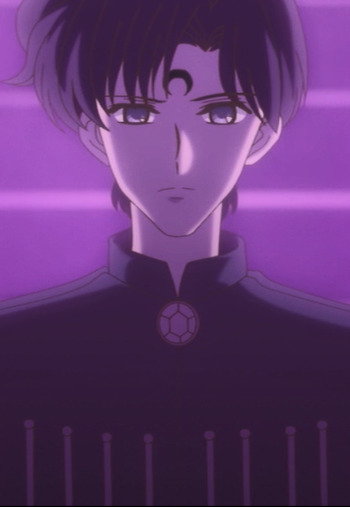

Tsutomu Kashiwakura is a Japanese voice actor and sound director.
- Gender: Male
- Birthday: March 1, 1966
- Hometown: Sagamihara, Kanagawa, Japan
| |
Tsutomu Kashiwakura is a Japanese voice actor and sound director.
|
|---|
|  | Saphir |
|
Saphir is the younger brother of Dimande. He is more cautious and rational than his companions. He is more sympathetic than his brother. He has a past relationship with Petz, the oldest Ayakashi sister. He loves his older brother. |
Go Back to Main Page |
Go Back to Homepage |
|
|
|
OR |
|